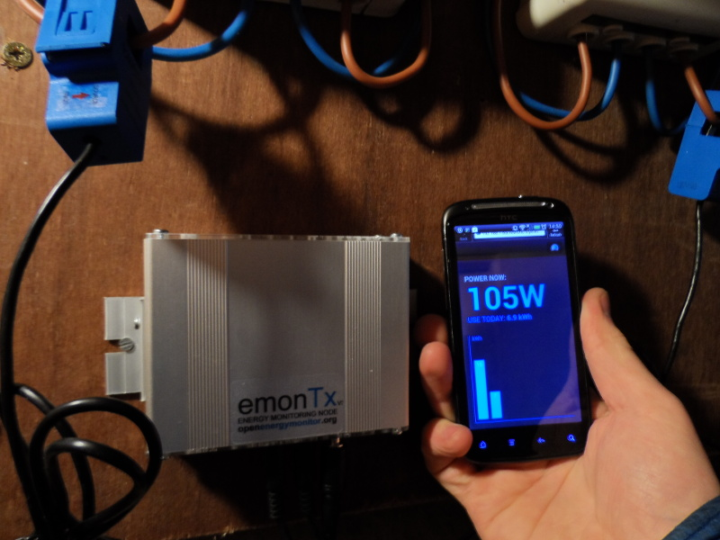
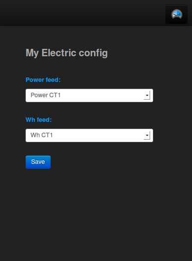
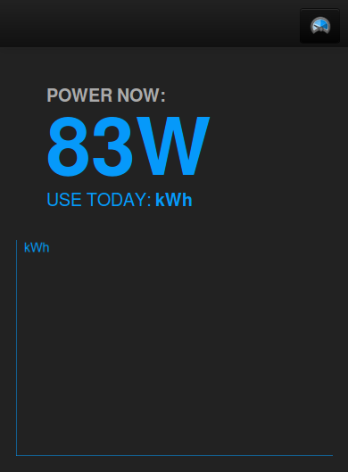
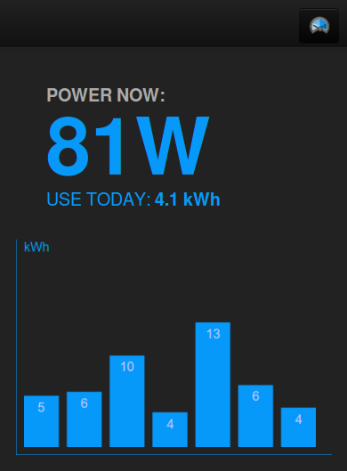

Home Energy Monitor (emonTx v3, Raspberry Pi, Emoncms V8)
This guide details how to build a web-connected home electricity monitor using the OpenEnergyMonitor emonTx V3, a Raspberry Pi (with RFM12Pi expansion board) and Emoncms web-app for logging and viewing the data. At the end of this guide you should have your system up and running with your energy data accessible on a mobile friendly web page like this:

System overview
{kind=link}
Parts list
Here are the parts you will need, most of them are available from the OpenEnergyMonitor shop.
1x emonTx V3 pre-assembled
1x 100A max clip-on current sensor CT
1x AC-AC Power Supply Adapter - AC voltage sensor (Both UK and Euro plugs are available)
1x Raspberry Pi (Model B) - Web-connected Base Station
1x RFM12Pi - Raspberry Pi Base Station Receiver Board
1x Blank SD Card
1x (optional) RaspberryPi case, this one is nice: Pimoroni Berryblack Case
Note: it's important that the frequency (868Mhz / 433Mhz) of the chosen modules match each other and is a legal ISM band in your country.
You might also need:
1x 5V DC USB Power Adapter (UK Plug)
1x Micro-USB cable
1x Ethernet cable
System setup
The OpenEnergyMonitor hardware listed above all come pre-assembled, no soldering is required. However for this particular configuration we need to change the default firmware on the emonTx in order to gain the benefit of the new addition of accumulated watt-hours calculation on the emonx which increases the accuracy and reliability of the energy measurement.
Changing the EmonTx firmware 1. Start by following the: setting up the arduino anvironment guide 2. Click on File > sketchbook > OpenEnergyMonitor > emonTxFirmware > emonTxV3 > RFM12B > Examples > emonTxV3_continuous_kwhtotals_noeeprom. This will load the firmware example that both uses the higher accuracy continuous sampling code by Robin Emley and the watt hour calculation code mentioned above. 3. Set the frequency of your emontx at the top of the sketch/firmware and nodeid if you wish to change it. Plug up your emonTx v3 with a usb to serial programmer and click on Upload.
Continuing with the hardware installation:
- Place or mount your emontx near your meter cabinet, the emonTx V3 comes with wall mounts as can be seen in the example installation above.
- Plug in the CT sensor into the emonTx first before clipping it around the mains wire and before powering-up the emonTx. Clip the sensor around either the live or neutral wire of the circuit you wish to measure. (Don't clip around both as the magnetic fields will cancel).
- Plug in the AC-AC Voltage adapter this both power's the emonTx and is used for sampling the AC mains voltage. A red light should now appear near the AC-AC adapter input and start flashing once every 10 seconds. Thats the emonTx set up! The emonTx can also be powered by batteries or from DC power source. See the emonTx technical wiki for info on using alternate power sources and interoperating the red LED behaviour
- Plug the RFM12Pi hardware expansion module onto the Pi's GPIO pins taking care to align up pin 1, the RFM12Pi should be connected to the GPIO pins connector closest to the edge of the pi.
Preparing the raspberrypi SD Card
Download the official raspberrpi raspbian image and write to the SD card.
http://www.raspberrypi.org/downloads
Once uploaded to the SD card, insert the SD card into the raspberrypi and power the pi up.
Find the IP address of your raspberrypi on your network then connect and login to your pi with SSH, for windows users there's a nice tool called putty which you can use to do this. To connect via ssh on linux:
ssh pi@YOUR_PI_IP_ADDRESS
It will then prompt you for a username and password which are: username:pi, password: raspberry.
Now that your in the first step is to edit the inittab and boot cmdline config file to allow the python gateway which we will install next to use the serial port:
sudo nano /etc/inittab
At the bottom of the file comment out the line (by adding a ‘#’ at beginning)
# T0:23:respawn:/sbin/getty -L ttyAMA0 115200 vt100
[Ctrl+X] then [y] then [Enter] to save and exit
Edit boot cmdline.txt
sudo nano /boot/cmdline.txt
replace the line:
dwc_otg.lpm_enable=0 console=ttyAMA0,115200 kgdboc=ttyAMA0,115200 console=tty1 root=/dev/mmcblk0p2 rootfstype=ext4 elevator=deadline rootwait
with:
dwc_otg.lpm_enable=0 console=tty1 root=/dev/mmcblk0p2 rootfstype=ext4 elevator=deadline rootwait
Reboot the pi so that this will take effect:
sudo reboot
Next we will install git and python gateway dependencies
sudo apt-get update
sudo apt-get install git-core python-serial python-configobj
Download oem_gateway with git (Im temporarily using my github 'fork' here until the node interface code has been integrated in Jerome's master repository, see here for discussion https://github.com/Jerome-github/oem_gateway/pull/20
git clone https://github.com/TrystanLea/oem_gateway cd oem_gateway cp oemgateway_node.conf.dist oemgateway.conf
Open the oem_gateway configuration file
nano oemgateway.conf
Set your radio frequency and network group in the listener config (use short hand 4 for 433Mhz and 8 for 868Mhz).
Set your emoncms.org apikey in the apikey section in the buffer.
Next we make oem_gateway run as a deamon, steps from the oem_gateway readme.
Create group emoncms and make user pi part of it
sudo groupadd emoncms sudo usermod -a -G emoncms pi
Create a directory for the logfile and give ownership to user pi, group emoncms
sudo mkdir /var/log/oemgateway sudo chown pi:emoncms /var/log/oemgateway sudo chmod 750 /var/log/oemgateway
Make script run as daemon on startup
Copy the oemgateway init script:
sudo cp oemgateway.init.dist /etc/init.d/oemgateway sudo chmod 755 /etc/init.d/oemgateway sudo update-rc.d oemgateway defaults 99
The gateway can be started or stopped anytime with following commands:
sudo service oemgateway start sudo service oemgateway stop sudo service oemgateway restart
To stop running automatically on startup (sudo update-rc.d -f oemgateway remove)
That's it, with your emonTx V3 powered, inputs should start appearing under the node tab in your emoncms account in a few seconds.
Configure Raspbian to run in read-only mode for increased stability (optional but recommended)
Steps from: http://www.raspberrypi.org/forum/viewtopic.php?f=29&t=22596
a) sudo nano /etc/default/rcS, add line RAMTMP=yes
b) sudo nano /etc/fstab
tmpfs /tmp tmpfs nodev,nosuid,size=30M,mode=1777 0 0 tmpfs /var/log tmpfs nodev,nosuid,size=30M,mode=1777 0 0 proc /proc proc defaults 0 0 /dev/mmcblk0p1 /boot vfat defaults 0 2 /dev/mmcblk0p2 / ext4 defaults,ro,noatime,errors=remount-ro 0 1 # /dev/mmcblk0p3 /home ext4 defaults,noatime
c) fix mtab:
sudo rm /etc/mtab sudo ln -s /proc/self/mounts /etc/mtab
Change mount mode:
sudo mount -o remount,ro /dev/mmcblk0p2 / sudo mount -o remount,rw /dev/mmcblk0p2 /
Setting up emoncms
Navigate to the Node tab.
Click on the name of the node that appeared, it should show a drop down menu. Select the node type: EmonTx V3 (Continuous sampling with Wh totals). This will turn the undefined node into a full populated node with a list of available variables.
{kind=link}
Click on Config for:
Power CT1: Select Log to feed, enter a name for the feed such as "Power CT1" or House Power or whatever, select the PHPFiwa feed engine and select the 10s feed interval (this is the same rate at which the EmonTx is posting)
Wh CT1: Again select Log to feed, enter a name for the feed such as "Wh CT1" or House Wh, select the PHPFina feed engine and select the 10s feed interval.
If your using the other CT's repeat for each CT.
Click on My Electric.
Click on the middle of the my electric page to bring up the configuration interface.
Select under the power feed: Power CT1
and under the Wh feed Wh CT1.
click save
Thats it you should now see your home electricity dashboard.
  
Configuration After initial configuration After a week of logging
Open the page on your mobile phone and bookmark it. When you click on the bookmark it will automatically log you in and bring up your electricity dashboard.
Using the monitor
The appliance list tool is a useful exercise for answering questions such as how much electricity can be save by using low energy lighting such as LED's? How much electricity does turning off lighting when not in use save?
Login to emoncms.org and then navigate to Extras > Report > Appliance list
The Electricity audit and savings case study provides more background on the appliance list exercise
Dive in, learn more
OpenEnergyMonitor mission is both to develop a super open source energy monitoring system and to build a knowledge resource that can be used to learn about everything that goes into an energy monitor. You should be able to start with just plugging up the system and using it but then be able to dive in and learn more about say the circuit design or how the web software works if you want to.
Learn more about the EmonTx v3 on the main emonTx V3 documentation page and technical wiki
Learn more about the RaspberryPI BaseStation and the RFM12Pi Technical Wiki
Learn more about Emoncms
Contributors
- Robin Emley: development of the continuous sampling emontx v3 code
- Jerome Lafréchoux: development of the oem_gateway script
- Jean Claude Wippler of jeelabs: development of RFM12B Library and RFM12_Demo code.
- Martin Harizanov: adaptation of Jean Claude Wipplers RFM12_Demo example
- Glyn Hudson: design of EmonTx v3 unit.
- Robert Wall: Circuit design feedback and rigour behind building blocks documentation that makes up the above.
- Glyn Hudson and Martin Harizanov: design of RFM12Pi board.
- Glyn Hudson: production logistics of EmonTx v3 unit and RFM12Pi board.
- Trystan Lea: emoncms development, new node interface and mobile dashboard, wh calculation addition to emontx firmware and writing of this documentation